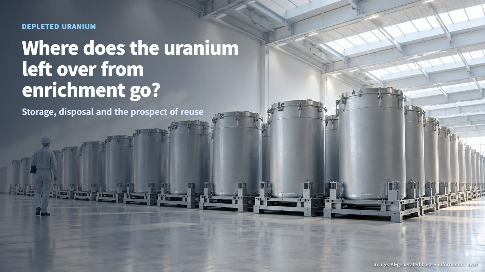
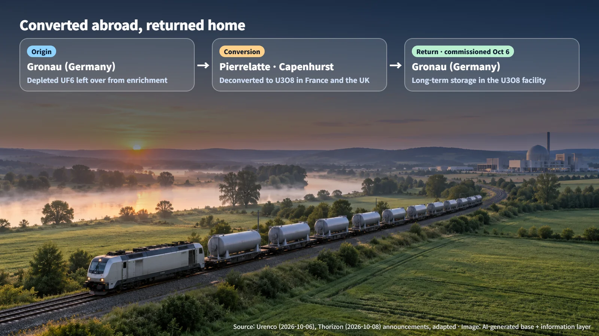
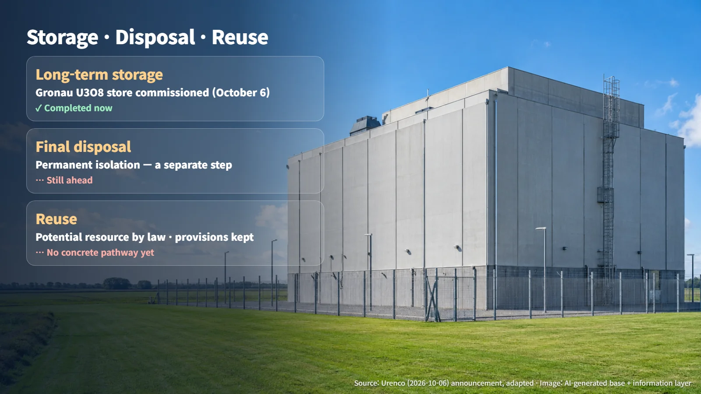
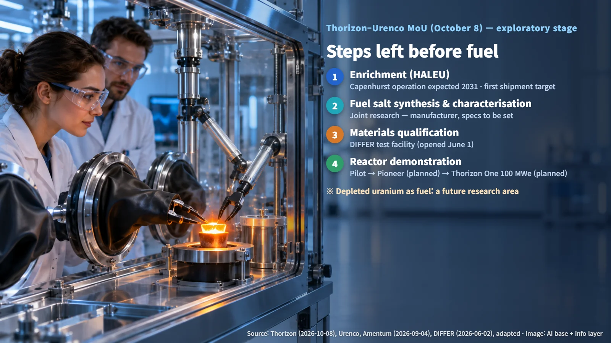

Germany · Netherlands · Depleted Uranium
Where Does the Uranium Left Over From Enrichment Go? Storing Depleted Uranium and the Prospect of Reuse
Urenco has commissioned a long-term U3O8 store at Gronau, and a new Thorizon–Urenco MoU explores whether depleted uranium could one day feed molten salt reactors.
Editorial responsibility: GlobalNuclearNews
Most people have heard that uranium has to be "enriched" before it can fuel a nuclear power plant. Fewer know what happens to the uranium that is left behind once enrichment is done, and many wonder whether it simply piles up somewhere. This week, two pieces of news from Europe touched on exactly that question. In Germany, a facility built to store the leftover uranium for the long term was officially commissioned. Two days later, a new cooperation was announced to explore whether that same material might one day become fuel. Read side by side, the two stories show clearly how far apart "storing" and "using again" still are.

The Shadow of Enrichment: What Is Depleted Uranium?
Natural uranium mined from the ground is mostly uranium-238. Uranium-235, the isotope that splits readily in a reactor, makes up only a tiny share. Enrichment is the process of raising that uranium-235 share. During enrichment, uranium is usually handled as uranium hexafluoride (UF6), a compound in which one uranium atom is bonded to six fluorine atoms.
When uranium-235 is concentrated in one stream, the other stream is left with less uranium-235 than it started with. That leftover material is depleted uranium. Think of squeezing juice from fruit: the pulp stays behind. A simple picture is an enrichment plant with two outlets — enriched uranium, destined to become fuel, flows out of one, and depleted uranium flows out of the other. As long as enrichment continues, depleted uranium keeps accumulating, so how to manage it is a question that comes bundled with enrichment itself.
Gronau, Germany: Converted Abroad, Returned Home
On October 6, the European enrichment company Urenco announced the official commissioning of a uranium oxide (U3O8) storage facility at its Gronau site in Germany. U3O8 is a solid oxide of uranium and oxygen, and the company cited its chemical stability, among other properties, as making it well suited to long-term storage. The facility was part of an existing site expansion licence approved in 2005, and the storage building itself was completed several years ago. With the official commissioning, the company said, the legal and operational requirements for safe storage have now been met.
The route the material travels is the interesting part. From now on, depleted UF6 generated at Gronau will be shipped to Pierrelatte in France and Capenhurst in the United Kingdom, where it will be chemically converted into U3O8. Turning UF6 into a stable oxide in this way is called deconversion. The converted material can then return to Gronau for long-term storage. In effect, German depleted uranium crosses borders, becomes a solid oxide, and then comes back to a store in Germany.

Storage, Disposal and Reuse: Three Separate Steps
Three terms help make sense of this news. Deconversion changes the chemical form of the material. Long-term storage keeps that material safely in place. Final disposal isolates it permanently, on the assumption that it will never be retrieved for use. The Gronau commissioning completes the storage step; final disposal and any expansion of enrichment capacity remain separate milestones with their own processes.

Reuse sits in its own category as well. Under current law, depleted uranium is classified as a potential reusable resource. Urenco, however, says that at present there is no concrete reuse pathway, and that it maintains financial provisions for future recycling, use or disposal. For now, depleted uranium waits in the store in a stable form as a resource that might be used someday, while its eventual use remains open.
Could Molten Salt Reactors Use Depleted Uranium? The Steps Between Store and Fuel
A move to explore that "someday" came on October 8. Thorizon of the Netherlands and Urenco announced a memorandum of understanding (MoU) to explore cooperation on the advanced nuclear fuel cycle. A molten salt reactor uses salt melted at high temperature as both fuel and coolant, in place of solid fuel rods, and Thorizon's design, Thorizon One, works this way. The company describes replaceable cartridges that hold the fuel and are swapped every 5 to 10 years. That interval is the company's design description; it still has to be demonstrated in operation and approved by the regulator.
The MoU examines whether Urenco could take part in supplying enrichment and fuel salt, Thorizon's plan to deploy in the mid-2030s, and whether depleted uranium could serve as a future fuel resource. It is an exploratory agreement: volumes, prices, delivery schedules and product specifications have not been set. The dates also deserve a careful reading. According to the MoU description, Urenco's HALEU facility at Capenhurst in the UK (HALEU is low-enriched uranium with a uranium-235 content above 5% and below 20%) is expected to begin operating in 2031, and Urenco's roadmap targets its first HALEU shipment in 2031. Facility start-up, first shipment and delivery of fuel salt for Thorizon are three distinct milestones.
Enriched uranium also needs further work before it becomes fuel. It has to be made into a molten salt fuel, its properties have to be characterised, and materials that can withstand that salt are required. On September 4, the US company Amentum announced joint research with France's Stellaria and Thorizon on molten fuel salt synthesis and characterisation, at a laboratory in Warrington, UK; commercial production capacity and long-term supply contracts have not been announced. On June 1, DIFFER in the Netherlands opened a Thorizon test facility that examines how high-temperature molten salt and radiation together affect materials. With the facility now open, the next milestone is the test results it produces.
The reactor side has its own sequence of steps. The company lays out component testing, a full-scale non-nuclear test (Pilot), a research-scale nuclear demonstration (Pioneer, planned), and then the first commercial 100 MWe-class Thorizon One at Borssele (planned). Between the depleted uranium in the store and the fuel salt in a reactor stands a staircase: enrichment, salt production, materials qualification and reactor demonstration. Using depleted uranium lies beyond that staircase as a future research area, and it still has to be proven as a commercial fuel.

Uranium left over from enrichment stays with us: it changes form, is stored in a stable state, and waits for a use. Keeping "storage", "disposal" and "reuse" apart — and likewise "MoU" and "supply" — is enough to read news like this with much greater precision.
Revision r001 · October 26, 2026. Editorial attribution added; article content and sources retained.